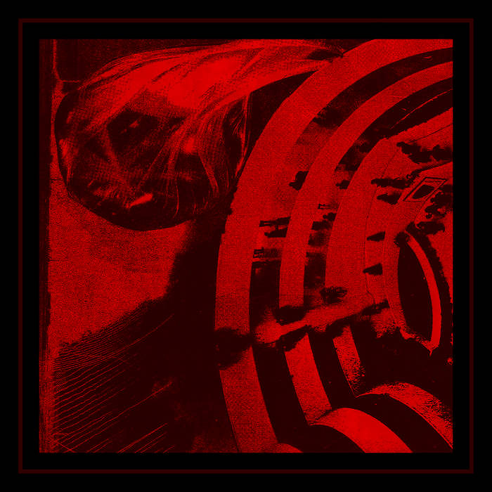

body of research - useless transfers
catalog: ar-009
year: 2021
format: cassette
A remote collaboration where each member had no idea what the others’ contributions would sound like until it was complete which makes for a strange, sprawling array of drones and slithering Chrome-tinted rock. Bubbling and whirring synthesizers paired with water and motors, guitar freakouts, a lot of twists and turns that are better off heard than said. Some samples taken from previous live shows at Cafe Nervosa (Indiana, PA) and The Government Center (Pittsburgh, PA). Edition of 15.
1. dd hd
2. s z
3. a e
2. s z
3. a e
*** cassette available on bandcamp ***